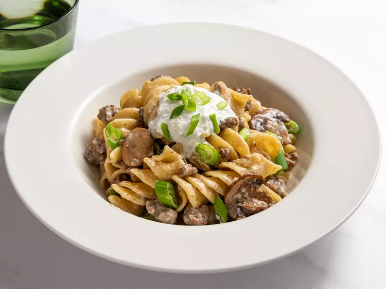

Ground Beef Stroganoff
Home

One-Pan Ground Beef Noodles - Helping Hamberger Help Itself
Ingredients
- 1 tablespoon unsalted butter
- 1 tablespoon vegetable oil
- 1 cup thinlyu sliced muishrooms
- 1 teaspoon salt,plus more to taste
- 1/2 cup diced onion
- 1 poind ground beef
- freshly ground black pepper
- 1 pinch cayenne pepper
- 2 cloves minced garlic
- 1 1/3 tablespoon flour
- 2 tablespoons vodka (optional)
- 2 1/2 cups beef broth, or as needed
- 1 cup water
- 2 1/2 cups egg noodles
- 1/2 cup sour cream, plus more for serving
- 2 tablespoons fresh sliced chives or green onions
directions
- Gather all ingredients
- melt butter and oil in a skillet over medium-high heat. Add
mushrooms, season with salt, and saute, stirring occasionally,
until they turn golden brown, 5 to 10 minutes
- add onion and ground beef. cook, stirring, until meat is browned
and crumbly, add onions turn soft and translucent, about 5 minutes.
Season with black pepper and cayenne
- Stir in minced garlic and flour, and cook for 1 minute.
- Pour in vodka and allow to evaporate, about 30 seconds.
- Stir in beef broth and water and bring to a simmer. Cook, stirring
occasionally, for 10 minutes
- Reduce heat to medium, and mix in noodles. Cover with a tight-fitted
lid and simmer for 5 minutes. uncover and stir thoroughly. Cover again
and cook until noodles are just tender, about 3 minutes.
- Once noodles are cooked, reduce the heat to low, and stir in sour
cream.
- serve immediatly with additional sour cream and green onions or
chives if so desired.